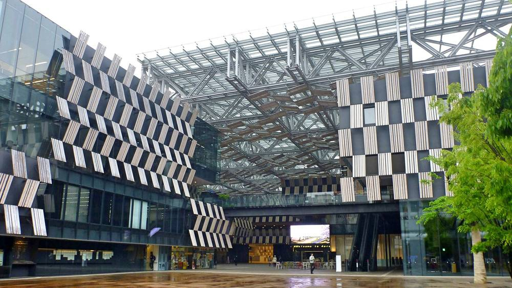

눈의 고장 일본 나가오카에서 시민 65명이 '시민공동발전소'…출자금으로 지붕·농지 위 태양광, 수익은 출자자에게

2023년 설립한 일반사단법인 '나가오카 자연에너지', 학교 출장수업·소수력 체험도…"연간 일사량 간토의 약 80%"
일본 니가타현 나가오카시에서 시민 단체 '나가오카 자연에너지'가 시민 출자로 태양광을 세우는 '시민공동발전소'를 추진하고 있다. 2023년 12월 일반사단법인으로 출범한 이 단체는 회원 65명(법인 1곳 포함)이 활동하며, 시민과 지지자에게서 출자금을 모아 주택·상점·공장·공공시설 지붕과 농지 위 영농형 태양광(솔라셰어링)에 패널을 설치한다. 전기를 판 수입은 출자한 시민에게 오래도록 돌려주는 구조로, 지역 안에서 돈이 돌게 하는 것이 목표다. 단체는 눈이 많은 지역이지만 연간 일사량이 간토 지방의 약 80%이고 이른 봄에는 간토보다 발전량이 많은 시기도 있다고 설명했다. 초등학교와 방과후 교실에서는 골판지 태양열 조리기와 초당 약 10L의 물로 5W를 만드는 소형 수력 키트로 체험 수업을 하고, 11월 22일에는 영농형 태양광 다큐멘터리 상영회를 연다.
시민에너지 관점
일본 각지의 시민공동발전소는 대형 사업자가 외면한 작은 지붕과 농지를 모아 지역 전력의 한 축을 만들어 왔다. 눈 많은 지역이라 어렵다는 통념도 실제 일사량 숫자 앞에서는 힘을 잃는다. 수십 명의 시민이 모여 출자하고, 아이들 교육에서 시작해 발전소 운영까지 잇는 방식은 어느 도시에서든 따라 할 수 있다. 우리 동네에서도 시민이 함께 출자하는 작은 발전소부터 시작하자.
출처: ながおか協働(note) 2026-11-11 ながおか協働 원문 보기
雪国・長岡で市民65人が「市民共同発電所」…出資金で屋根や農地の上に太陽光、収益は出資者へ
2023年設立の一般社団法人「ながおか自然エネルギー」、学校への出前授業や小水力体験も…「年間日射量は関東の約8割」
新潟県長岡市で、市民団体「ながおか自然エネルギー」が市民の出資で太陽光を設ける「市民共同発電所」を進めている。2023年12月に一般社団法人として発足した同団体は会員65人（法人1社を含む）が活動し、市民や賛同者から出資金を募って住宅・店舗・工場・公共施設の屋根や、農地の上のソーラーシェアリングにパネルを設置する。売電収入などを出資した市民に長期的に還元する仕組みで、地域の中でお金を回すことを目指している。同団体は、雪国ながら年間日射量は関東地方の約8割で、春先には関東より発電量が多い時期もあると説明する。小学校や放課後子ども教室では段ボール製のソーラークッカーや、毎秒約10Lの水流で5Wを発電する小水力キットを使った体験授業を行っており、11月22日にはソーラーシェアリングのドキュメンタリー上映会を開く。
市民エネルギーの視点
日本各地の市民共同発電所は、大手事業者が見向きもしない小さな屋根や農地を束ね、地域電力の一翼を担ってきた。雪国では無理だという通念も、実際の日射量の数字の前では力を失う。数十人の市民が集まって出資し、子どもの教育から発電所の運営までつなぐやり方は、どの町でもまねできる。わが町でも、市民が共に出資する小さな発電所から始めよう。
出典: ながおか協働(note) 2026-11-11 ながおか協働 原文を読む
日本雪国长冈65名市民建“市民共同发电所”…以出资在屋顶和农田上方装太阳能，收益回馈出资者
2023年成立的一般社团法人“长冈自然能源”，还到学校上课、开展小水电体验…“年日照量约为关东的80%”
在日本新潟县长冈市，市民团体“长冈自然能源”正在推进由市民出资建设太阳能的“市民共同发电所”。该团体2023年12月注册为一般社团法人，现有会员65名（含1家法人），向市民和支持者募集资金，在住宅、商店、工厂、公共设施屋顶及农田上方的农光互补设施上安装光伏板。售电收入等将长期回馈给出资市民，目标是让资金在本地循环。该团体介绍，长冈虽是多雪地区，但年日照量约为关东地区的80%，早春部分时段发电量甚至高于关东。团体还在小学和课后儿童教室开展体验课，使用纸板太阳能灶和每秒约10升水流即可发电5W的小型水力套件，并将于11月22日举办农光互补纪录片放映会。
市民能源视角
日本各地的市民共同发电所把大企业看不上的小屋顶和农田聚集起来，成为地方电力的一支力量。“多雪地区搞不了太阳能”的成见，在实际日照数据面前站不住脚。几十名市民共同出资、从儿童教育一直延伸到电站运营，这种做法在任何城市都可以复制。我们身边也可以从市民共同出资的小电站做起。
来源: ながおか協働(note) 2026-11-11 ながおか協働 查看原文
In snowy Nagaoka, 65 citizens build 'citizen co-owned power plants' with solar on roofs and farmland, returning revenue to investors
The Nagaoka Natural Energy association, founded in 2023, also runs school classes and micro-hydro demos; annual sunshine is about 80% of the Kanto region's
In Nagaoka, Niigata Prefecture, Japan, the citizens' group Nagaoka Natural Energy is promoting 'citizen co-owned power plants' financed by local residents. Registered as a general incorporated association in December 2023, the group has 65 members, including one company, and raises investment from citizens and supporters to install panels on the roofs of homes, shops, factories and public facilities and over farmland as solar sharing. Revenue from electricity sales is returned to citizen investors over the long term, with the aim of keeping money circulating locally. The group says that although Nagaoka is a snowy region, its annual sunshine is about 80% of the Kanto region's, and in early spring output sometimes exceeds Kanto's. It also runs hands-on classes at primary schools and after-school programmes using cardboard solar cookers and a micro-hydro kit that generates 5W from about 10 litres of water per second, and will hold a screening of a documentary on solar sharing on Nov. 22.
Citizen Energy View
Citizen co-owned power plants across Japan have bundled small roofs and farm plots that big developers ignore into a real pillar of local power. The belief that snowy regions cannot do solar loses its force against actual sunshine figures. A few dozen citizens pooling money and linking children's education to running a power plant is a model any town can copy. Start with a small, citizen-financed power plant in your own neighbourhood.
Source: ながおか協働(note) 2026-11-11 ながおか協働 Read the original